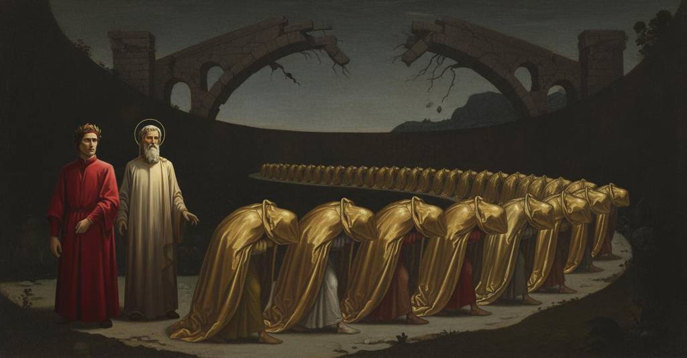

Inferno — Canto 23

Dante e Virgilio sfuggono ai Malebranche nella sesta bolgia, dove incontrano gli ipocriti sotto cappe di piombo, apprendono dai frati Catalano e Loderingo la pena di Caifa e la via tra le rovine, e Virgilio scopre l'inganno del diavolo. Dante and Virgil escape the Malebranche into the sixth ditch, where they meet hypocrites in leaden cloaks, learn from friars Catalano and Loderingo of Caiaphas's punishment and the route through the ruins, and Virgil discovers the devil's deceit. ダンテとウェルギリウスはマレブランケたちから逃れて第六の濠に入り、そこで鉛の外套を着た偽善者たちに出会い、修道士カタラーノとロデリンゴからカイアファの罰と崩落を通る道を知り、ウェルギリウスは悪魔の欺きを見抜く。
1
Taciti, soli, sanza compagnia
Silent, alone, without company
無言で、二人きり、伴もなく
2
n’andavam l’un dinanzi e l’altro dopo,
we went on, one before and the other after,
我らは進んだ、一人が前に、他方が後ろに、
3
come frati minor vanno per via.
as Minor Friars go along their way.
托鉢修道士が道を行くように。
4
Vòlt’ era in su la favola d’Isopo
My thought was turned to the fable of Aesop
イソップの寓話へと向けられていた
5
lo mio pensier per la presente rissa,
by the present brawl,
私の思いは、今の騒ぎのゆえに、
6
dov’ el parlò de la rana e del topo;
where he told of the frog and the mouse;
彼が蛙と鼠について語ったあの話に。
7
ché più non si pareggia ‘mo’ e ‘issa’
for ‘mo’ and ‘issa’ are no more alike
なぜなら、「今（mo）」と「今（issa）」ほど似ているものはない
8
che l’un con l’altro fa, se ben s’accoppia
than this one is with that, if one carefully couples
かの一件とこの一件を比べても、もしよく結びつけるなら
9
principio e fine con la mente fissa.
beginning and end with a fixed mind.
始まりと終わりを、心を定めて。
10
E come l’un pensier de l’altro scoppia,
And as one thought bursts forth from another,
そして一つの思いが他から弾け出るように、
11
così nacque di quello un altro poi,
so from that one another was then born,
そのようにして、そこからまた別の思いが生まれ、
12
che la prima paura mi fé doppia.
which made my first fear double.
それは最初の恐怖を私に倍加させた。
13
Io pensava così: ‘Questi per noi
I thought thus: ‘These, because of us,
私はこう考えた、「奴らは我らのために
14
sono scherniti con danno e con beffa
are mocked with such injury and derision
損害と嘲りをもって侮辱された
15
sì fatta, ch’assai credo che lor nòi.
that I believe it vexes them greatly.
このような仕打ちに、私は彼らがひどく恨んでいると信じる。
16
Se l’ira sovra ’l mal voler s’aggueffa,
If anger is added to their ill will,
もし怒りが悪意に加わるなら、
17
ei ne verranno dietro più crudeli
they will come after us more cruel
彼らは我らの後を追ってくるだろう、より残酷に
18
che ’l cane a quella lievre ch’elli acceffa’.
than the dog to the hare that it snaps at.’
犬が噛みつくあの野兎に向かうよりも」。
19
Già mi sentia tutti arricciar li peli
Already I felt all my hair bristle
すでに私は全身の毛が逆立つのを感じ
20
de la paura e stava in dietro intento,
with fear and I was looking intently behind,
恐怖に、そして後ろを気にしていた、
21
quand’ io dissi: «Maestro, se non celi
when I said: “Master, if you do not hide
その時私は言った、「師よ、もしあなたが隠してくれなければ
22
te e me tostamente, i’ ho pavento
yourself and me quickly, I am in terror
あなたと私を素早く、私は恐れています
23
d’i Malebranche. Noi li avem già dietro;
of the Malebranche. We have them behind us already;
マレブランケを。我らはすでに彼らを背後に感じます。
24
io li ’magino sì, che già li sento».
I imagine them so, that I already hear them.”
私は彼らを想像し、すでにその音を聞くほどです」。
25
E quei: «S’i’ fossi di piombato vetro,
And he: “If I were of leaded glass,
すると彼は、「もし私が鉛を塗った鏡であったとしても、
26
l’imagine di fuor tua non trarrei
I would not draw your outward image
お前の外なる姿を映し出すより
27
più tosto a me, che quella dentro ’mpetro.
more quickly to me, than I receive the one from within.
早く、内なる姿を私に取り込んだだろう。
28
Pur mo venieno i tuo’ pensier tra ’ miei,
Just now your thoughts came among mine,
たった今、お前の考えが私の心の中にやってきた、
29
con simile atto e con simile faccia,
with a similar motion and a similar face,
同じ身振りで、同じ顔つきで、
30
sì che d’intrambi un sol consiglio fei.
so that of both I made a single plan.
それゆえ両者から一つの決意を私は作った。
31
S’elli è che sì la destra costa giaccia,
If it is so that the right bank lies in such a way
もし右の岸がうまく傾斜しているなら、
32
che noi possiam ne l’altra bolgia scendere,
that we can descend into the next ditch,
我らは次の濠へ下りることができるだろう、
33
noi fuggirem l’imaginata caccia».
we will flee the imagined chase.”
そうすれば我らは想像された追跡から逃れられる」。
34
Già non compié di tal consiglio rendere,
He had not yet finished offering this counsel,
彼がその考えを述べ終わるか終わらないかのうちに、
35
ch’io li vidi venir con l’ali tese
when I saw them coming with wings outstretched,
私は彼らが翼を広げてやって来るのを見た
36
non molto lungi, per volerne prendere.
not far off, wanting to take us.
それほど遠くない場所から、我らを捕らえようとして。
37
Lo duca mio di sùbito mi prese,
My leader suddenly seized me,
我が導き手は、即座に私を抱き上げた、
38
come la madre ch’al romore è desta
like a mother who is awakened by a noise
物音に目覚め、
39
e vede presso a sé le fiamme accese,
and sees the flames lit near her,
近くに燃え上がる炎を見る母親のように、
40
che prende il figlio e fugge e non s’arresta,
who takes her son and flees and does not stop,
彼女は息子を抱えて逃げ、立ち止まらず、
41
avendo più di lui che di sé cura,
caring more for him than for herself,
自分自身よりも彼のことを気遣い、
42
tanto che solo una camiscia vesta;
so much that she wears only a shift;
寝間着一枚だけを身に着けているほどに。
43
e giù dal collo de la ripa dura
and down from the crest of the hard bank
そして硬い土手の頂から下へ
44
supin si diede a la pendente roccia,
on his back he gave himself to the sloping rock,
仰向けになって、傾斜した岩に身を委ねた、
45
che l’un de’ lati a l’altra bolgia tura.
that walls one of the sides of the next ditch.
それは次の濠の一方の側面を塞いでいる。
46
Non corse mai sì tosto acqua per doccia
Water never ran so fast through a millrace
水路を水がこれほど速く走ったことはない
47
a volger ruota di molin terragno,
to turn the wheel of a land-mill,
地上の水車の輪を回すために、
48
quand’ ella più verso le pale approccia,
when it approaches closest to the paddles,
それが水車板に最も近づく時に、
49
come ’l maestro mio per quel vivagno,
as my master down that slope,
我が師がその縁を滑り降りたように、
50
portandosene me sovra ’l suo petto,
carrying me upon his breast,
私をその胸の上に運びながら、
51
come suo figlio, non come compagno.
like his son, not like a companion.
伴侶としてではなく、我が子として。
52
A pena fuoro i piè suoi giunti al letto
Scarcely were his feet arrived at the bed
彼の足が底の
53
del fondo giù, ch’e’ furon in sul colle
of the bottom below, than they were on the ridge
床に着くか着かないかのうちに、彼らは丘の上に来た
54
sovresso noi; ma non lì era sospetto:
above us; but there was no fear of them there:
我らの真上に。しかしそこでは恐れることはなかった。
55
ché l’alta provedenza che lor volle
for the high providence that willed them to be
なぜなら彼らを望んだ高き摂理は
56
porre ministri de la fossa quinta,
ministers of the fifth ditch,
第五の濠の番人として置くことを、
57
poder di partirs’ indi a tutti tolle.
takes from them all the power to depart from there.
そこから去る力を、すべて彼らから奪うからだ。
58
Là giù trovammo una gente dipinta
Down there we found a painted people
そこには、彩色された民がいた
59
che giva intorno assai con lenti passi,
who went around with very slow steps,
彼らはきわめて緩やかな歩みで回り、
60
piangendo e nel sembiante stanca e vinta.
weeping and in appearance tired and defeated.
泣き、その顔つきは疲れ果て、打ち負かされていた。
61
Elli avean cappe con cappucci bassi
They had capes with low hoods
彼らは低い頭巾のついた外套をまとっていた
62
dinanzi a li occhi, fatte de la taglia
before their eyes, made in the cut
目の前に垂らし、その仕立ては
63
che in Clugnì per li monaci fassi.
that is made for the monks in Cluny.
クリュニーの修道士たちのために作られるもののようであった。
64
Di fuor dorate son, sì ch’elli abbaglia;
On the outside they are gilded, so that they dazzle;
外側は金色で、まばゆいほどであった。
65
ma dentro tutte piombo, e gravi tanto,
but inside all lead, and so heavy,
しかし内側はすべて鉛で、非常に重く、
66
che Federigo le mettea di paglia.
that Frederick would have put his of straw.
フェデリーコ帝のものも藁のように思えるほどだった。
67
Oh in etterno faticoso manto!
Oh eternally wearisome mantle!
ああ、永遠に続く骨の折れる外套よ！
68
Noi ci volgemmo ancor pur a man manca
We turned again, still to the left hand,
我らは再び左手へと向きを変え、
69
con loro insieme, intenti al tristo pianto;
with them together, intent on the sad lament;
彼らと共に、その悲しき嘆きに心を向けた。
70
ma per lo peso quella gente stanca
but because of the weight that weary people
しかしその重さゆえに、疲れ果てた民は
71
venìa sì pian, che noi eravam nuovi
came so slowly, that we were new
あまりにゆっくりと進むので、我らは新しくなった
72
di compagnia ad ogne mover d’anca.
in company at every moving of a hip.
腰を動かすたびに、連れ合いが。
73
Per ch’io al duca mio: «Fa che tu trovi
So that I to my guide: "See that you find
それゆえ私は我が導き手に言った。「どうか見つけてください
74
alcun ch’al fatto o al nome si conosca,
someone who by deed or name may be known,
その行いや名によって知られる者を、
75
e li occhi, sì andando, intorno movi».
and, as you walk, move your eyes about."
そして歩きながら、目を周りに向けてください」。
76
E un che ’ntese la parola tosca,
And one who understood the Tuscan speech,
すると一人がトスカーナの言葉を聞きつけ、
77
di retro a noi gridò: «Tenete i piedi,
cried out from behind us: "Hold your feet,
我らの後ろから叫んだ。「その足を止めよ、
78
voi che correte sì per l’aura fosca!
you who run so through the dusky air!
この暗い大気の中をかくも速く走る者たちよ！
79
Forse ch’avrai da me quel che tu chiedi».
Perhaps you will have from me what you ask."
おそらく私から、そなたの求めるものが得られよう」。
80
Onde ’l duca si volse e disse: «Aspetta,
At which my guide turned and said: "Wait,
そこで導き手は振り返り、言った。「待て、
81
e poi secondo il suo passo procedi».
and then proceed according to his pace."
そして彼の歩みに合わせて進むのだ」。
82
Ristetti, e vidi due mostrar gran fretta
I stopped, and saw two show great haste
私は立ち止まり、二人が大いなる焦りを
83
de l’animo, col viso, d’esser meco;
of the spirit, with their face, to be with me;
心に、そして顔に示して、私と共に在ろうとするのを見た。
84
ma tardavali ’l carco e la via stretta.
but the burden and the narrow path slowed them.
しかし荷の重さと狭い道が彼らを遅らせていた。
85
Quando fuor giunti, assai con l’occhio bieco
When they had arrived, with a long, sidelong stare
彼らが到着すると、ひどく横目で
86
mi rimiraron sanza far parola;
they gazed at me without a word;
私を黙って見つめた。
87
poi si volsero in sé, e dicean seco:
then they turned to each other, and said to one another:
それから互いに向き直り、内々で語り合った。
88
«Costui par vivo a l’atto de la gola;
"This one seems alive by the action of his throat;
「こやつは喉の動きからして生きているようだ。
89
e s’e’ son morti, per qual privilegio
and if they are dead, by what privilege
そしてもし彼らが死者なら、いかなる特権によって
90
vanno scoperti de la grave stola?».
do they go uncovered by the heavy stole?"
この重い衣をまとわずにいるのか？」。
91
Poi disser me: «O Tosco, ch’al collegio
Then they said to me: "O Tuscan, who to the college
それから私に言った。「おお、トスカーナ人よ、そなたは
92
de l’ipocriti tristi se’ venuto,
of the sad hypocrites have come,
悲しき偽善者たちの集いに来たのだから、
93
dir chi tu se’ non avere in dispregio».
do not disdain to say who you are."
自分が何者であるかを語ることを厭うな」。
94
E io a loro: «I’ fui nato e cresciuto
And I to them: "I was born and grew up
すると私は彼らに言った。「私は生まれ育った
95
sovra ’l bel fiume d’Arno a la gran villa,
on the fair river Arno in the great city,
美しきアルノ川のほとりの大いなる都で、
96
e son col corpo ch’i’ ho sempre avuto.
and I am with the body I have always had.
そして私は常に持っていた肉体と共にある。
97
Ma voi chi siete, a cui tanto distilla
But who are you, from whom so much sorrow distills,
しかしあなた方は何者か、これほどまでに滴らせる者は
98
quant’ i’ veggio dolor giù per le guance?
as I see, down along your cheeks?
私が見るに、頬を伝う苦痛を？
99
e che pena è in voi che sì sfavilla?».
and what penalty is on you that so glitters?"
そしてあなた方をかくも輝かせている罰とは何ですか？」。
100
E l’un rispuose a me: «Le cappe rance
And one replied to me: "The orange-yellow capes
すると一人が私に答えた。「この黄ばんだ外套は
101
son di piombo sì grosse, che li pesi
are of lead so thick, that the weights
あまりに厚い鉛でできているので、その重さが
102
fan così cigolar le lor bilance.
make their scales creak so.
我らの秤をこのように軋ませるのです。
103
Frati godenti fummo, e bolognesi;
Jovial Friars we were, and Bolognese;
我らは陽気な修道士であり、ボローニャ人であった。
104
io Catalano e questi Loderingo
I Catalano and this one Loderingo
私はカタラーノ、こちらはロデリンゴと
105
nomati, e da tua terra insieme presi
named, and by your city taken together
名乗り、あなたの地から共に選ばれた
106
come suole esser tolto un uom solingo,
as a single man is usually taken,
通常は一人の人間が選ばれるように、
107
per conservar sua pace; e fummo tali,
to preserve its peace; and we were such,
その平和を保つために。そして我らはそのような者であった、
108
ch’ancor si pare intorno dal Gardingo».
that it still appears around the Gardingo."
そのことは今もガルディンゴのあたりに現れている」。
109
Io cominciai: «O frati, i vostri mali . . . »;
I began: “O friars, your evils . . . ”;
私は口を開いた、「おお修道士たちよ、あなた方の不幸は……」。
110
ma più non dissi, ch’a l’occhio mi corse
but said no more, for to my eye there rushed
だがそれ以上は言わなかった、目に飛び込んできたので
111
un, crucifisso in terra con tre pali.
one, crucified on the ground with three stakes.
三本の杭で地面に磔にされた者が。
112
Quando mi vide, tutto si distorse,
When he saw me, he contorted himself all over,
私を見ると、彼は全身をねじらせ、
113
soffiando ne la barba con sospiri;
puffing into his beard with sighs;
溜息と共に髭に息を吹きかけた。
114
e ’l frate Catalan, ch’a ciò s’accorse,
and friar Catalano, who took note of this,
それに気づいたカタラーノ修道士が、
115
mi disse: «Quel confitto che tu miri,
said to me: “That one transfixed whom you gaze upon,
私に言った、「そなたが見つめるあの磔の者は、
116
consigliò i Farisei che convenia
counseled the Pharisees that it was expedient
ファリサイ人たちに、民のために一人の男を
117
porre un uom per lo popolo a’ martìri.
to put one man to martyrdom for the people.
殉教させるのが得策だと忠告したのだ。
118
Attraversato è, nudo, ne la via,
He is stretched crosswise, naked, on the path,
ご覧の通り、彼は裸で道に横たえられ、
119
come tu vedi, ed è mestier ch’el senta
as you see, and it is necessary that he feel
通り過ぎる者すべての重みを、
120
qualunque passa, come pesa, pria.
whoever passes, how much he weighs, first.
誰よりも先に感じねばならぬ運命なのだ。
121
E a tal modo il socero si stenta
And in such a way his father-in-law is tormented
そして同じように彼の舅も苦しんでいる、
122
in questa fossa, e li altri dal concilio
in this ditch, and the others of the council
この濠で。そして公会の他の者たちも。
123
che fu per li Giudei mala sementa».
that was for the Jews an evil seed.”
その公会はユダヤ人にとって悪しき種となった」。
124
Allor vid’ io maravigliar Virgilio
Then I saw Virgil marvel
その時、私はウェルギリウスが驚嘆するのを見た、
125
sovra colui ch’era disteso in croce
over him who was stretched out on a cross
十字架に架けられた者を見て、
126
tanto vilmente ne l’etterno essilio.
so vilely in the eternal exile.
永遠の追放の地で、かくも卑しく。
127
Poscia drizzò al frate cotal voce:
Then he directed to the friar such a voice:
それから彼は修道士にこのような言葉を向けた、
128
«Non vi dispiaccia, se vi lece, dirci
“May it not displease you, if you are allowed, to tell us
「お許しいただけるなら、どうかお気を悪くされずにお教え願いたい、
129
s’a la man destra giace alcuna foce
if on the right hand lies any passage
右手の方に、我々二人が抜け出せる
130
onde noi amendue possiamo uscirci,
by which we both can get ourselves out,
何らかの出口があるかどうかを。
131
sanza costrigner de li angeli neri
without compelling some of the black angels
例の黒い天使たちに、この底から我々を
132
che vegnan d’esto fondo a dipartirci».
to come from this bottom to lead us away.”
連れ出しに来るよう強いることなしに」。
133
Rispuose adunque: «Più che tu non speri
He replied then: “Nearer than you hope
すると彼は答えた、「そなたが望むよりも近くに
134
s’appressa un sasso che da la gran cerchia
approaches a rock-bridge that from the great circle
大いなる周壁から伸びている岩がある。
135
si move e varca tutt’ i vallon feri,
moves and crosses all the savage valleys,
それはすべての険しい谷を渡っているが、
136
salvo che ’n questo è rotto e nol coperchia;
except that in this one it is broken and does not cover it;
この谷では壊れていて、覆ってはいない。
137
montar potrete su per la ruina,
you will be able to climb up by the ruin,
あなた方はその崩れた瓦礫の上を登ることができるだろう、
138
che giace in costa e nel fondo soperchia».
which lies on the bank and piles up on the bottom.”
それは斜面に横たわり、底に積み重なっている」。
139
Lo duca stette un poco a testa china;
The leader stood a little while with his head bowed;
導き手はしばし頭を垂れていた。
140
poi disse: «Mal contava la bisogna
then said: “He told the business badly,
それから言った、「実にひどい説明をしたものだ、
141
colui che i peccator di qua uncina».
he who hooks the sinners over there.”
向こうで罪人どもを鉤で突く奴は」。
142
E ’l frate: «Io udi’ già dire a Bologna
And the friar: “I once heard it said in Bologna
すると修道士は、「私はかつてボローニャで聞いたことがある、
143
del diavol vizi assai, tra ’ quali udi’
of the devil's many vices, among which I heard
悪魔には多くの悪徳があり、その中に
144
ch’elli è bugiardo, e padre di menzogna».
that he is a liar, and the father of lies.”
彼は嘘つきであり、嘘の父であると」。
145
Appresso il duca a gran passi sen gì,
Afterward the leader with great strides went away,
その後、導き手は大股で去っていった、
146
turbato un poco d’ira nel sembiante;
a little troubled with anger in his expression;
その面持ちにはいくらか怒りが揺れていた。
147
ond’ io da li ’ncarcati mi parti’
wherefore I from the burdened ones departed,
そこで私は重荷を負う者たちから離れ、
148
dietro a le poste de le care piante.
following the tracks of the dear feet.
その敬愛する足跡の後を追った。